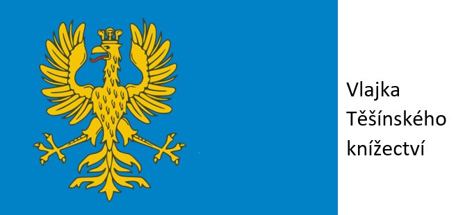
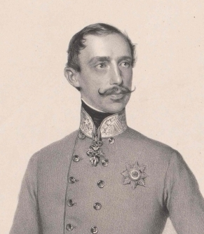
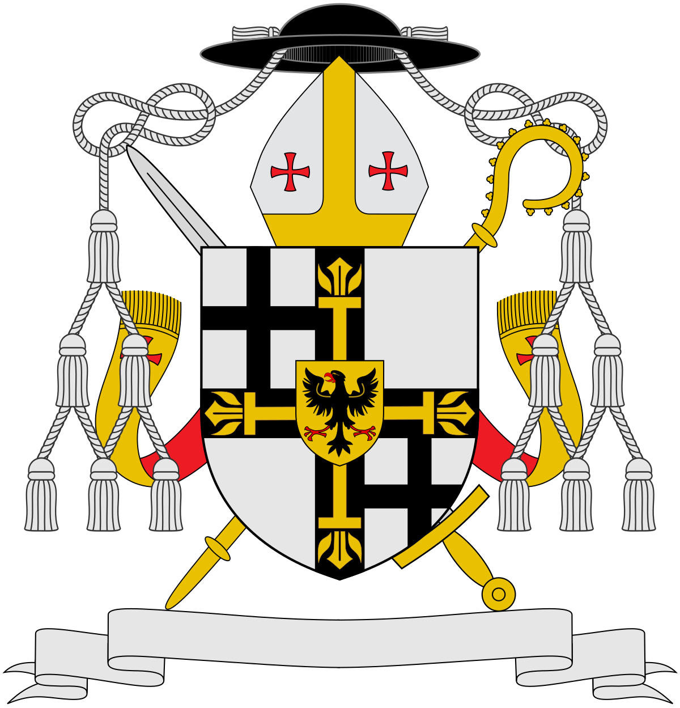
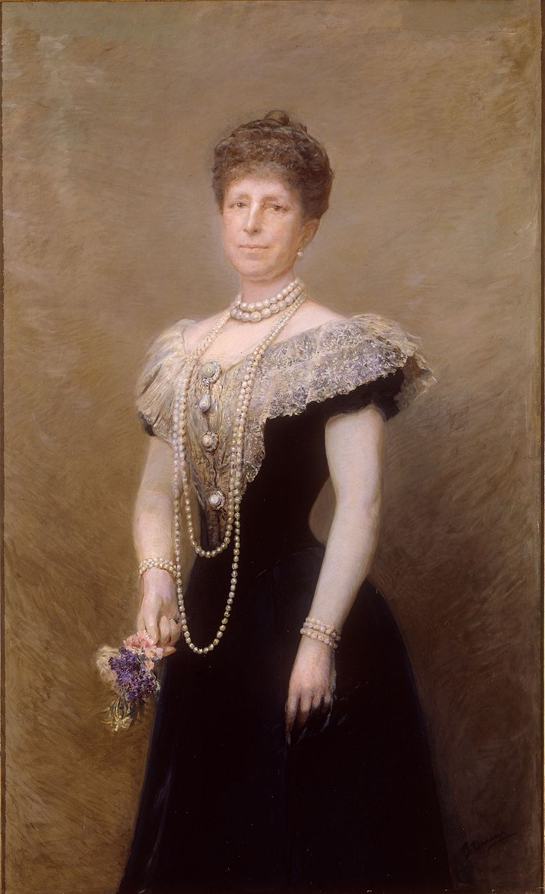

<!DOCTYPE html>
<html lang="en">
<head>
  <!--add here -->
  <link 
  rel="shortcut icon" 
  type="image/jpg"
  href="images/Erb 2.jpg">
    <meta charset="UTF-8">
    <meta http-equiv="X-UA-Compatible" content="IE=edge">
    <meta name="viewport" content="width=device-width, initial-scale=1.0">
    <meta name="keywords" content="Habsburk">
    <meta name="description" content="Podívejte se jací vládci seděli na pomyslném Těšinském trůnu 
    po smrti Alžběty Lukrécie, poslední těšinské kněžny z rodu Piastovců.">
    <title>Těšínská linie Habsbursko-Lotrinské dynastie</title>
</head>
<body>
    
</body>
</html>


<!DOCTYPE html>
<html lang="en">
  <head>
    <title>Těšínská linie Habsbursko-Lotrinské dynastie</title>
  </head>
  <body>
    <p class="Teschen1"> Těšinské Knížectví</p>
    
    <style>
      img.modra{
        width: 1895px;
        height: 100px;
      }
      p.Teschen1{
        position: absolute;
        right: 1625px;
        color:white;
      }
    </style>
    <p>
      <a href="https://cs.wikipedia.org/wiki/T%C4%9B%C5%A1%C3%ADnsk%C3%A9_kn%C3%AD%C5%BEectv%C3%AD">Těšinské knížectví</a> vzniklo v roce 1290 a zaniklo v roce 1918, kdy bylo po <a href="https://cs.wikipedia.org/wiki/%C4%8Ceskoslovensko-polsk%C3%BD_spor_o_T%C4%9B%C5%A1%C3%ADnsko">sporu</a> a taktéž <a href="https://cs.wikipedia.org/wiki/Sedmidenn%C3%AD_v%C3%A1lka">Sedmi denní válce</a> rozděleno 
      mezi Polsko a Československo. Na začátku mu vládl rod <a href="https://cs.wikipedia.org/wiki/T%C4%9B%C5%A1%C3%ADnsk%C3%A1_v%C4%9Btev_Piastovc%C5%AF">Piastovců</a>, kteří po smrti <a href="https://cs.wikipedia.org/wiki/Al%C5%BEb%C4%9Bta_Lukr%C3%A9cie_T%C4%9B%C5%A1%C3%ADnsk%C3%A1">Alžběty Lukrécie</a> vymřeli v roce 1653, a Těšínsko připadlo Českým králům jako léno.
      Odtud se dostalo až k Těšinské větvi Habsbursko-Lotrinské dynastie.
    </p>
    
    <style>
      p.Teschen1{
        font-size: xx-large;
        font-weight: bold;

      }
      img.Teschen2 {
        width: 400px;
        border-radius: 30px;
        margin: 5px;
      }
    </style>
    <p class="Teschen4">Seznam Těšinských knížat z <a href="https://cs.wikipedia.org/wiki/Habsbursko-lotrinsk%C3%A1_dynastie">Habsbursko-Lotrinské dynastie</a>:</p>
    <style>
      p.Teschen4{
        font-weight: bold;
        font-size:x-large;
      }
    </style>
    <p class="jméno">Albert Kazimír Sasko-Těšínský</p>
    
    <style>
        img.Albert {
          width: 200px;
          border-radius: 10px;
          float: left;
          margin: 10px;
            }
        p.jméno {
          font-weight: bold;
          font-size: larger;
          margin: 10px;
        }
      </style>
    <p>Kníže Těšínský</p>
    <p>
      Albert-Kazimír Sasko-Těšínský se narodil 11.7.1738, a zemřel 10.2.1822.
      Jeho matka byla <a href="https://cs.wikipedia.org/wiki/Marie_Josefa_Habsbursk%C3%A1">Marie Josefa Habsburská</a>, jeho otec byl Polsky král <a href="https://cs.wikipedia.org/wiki/August_III._Polsk%C3%BD">August III. Polský</a>,
    přiženil se do Habsbursko-Lotrinské dynastie sňatkem s <a href="https://cs.wikipedia.org/wiki/Marie_Kristina_Habsbursko-Lotrinsk%C3%A1">Marii Kristinou Habsburko-Lotrinskou</a>, dcerou <a href="https://cs.wikipedia.org/wiki/Marie_Terezie">Marie Terezie.</a>
    Maželství zůstalo bezdětné, Marie Kristýna brzy zemžela na onemocnění žaludku. Po její smrti se Albert věnoval dobročinnosti (byl svobodná zednář) a jeho sbírce umění. V Bratislavě vybudoval uměleckou sbírku, stal se guvernérem <a href="https://cs.wikipedia.org/wiki/Rakousk%C3%A9_Nizozem%C3%AD">Rakouského Nizozemí (dnes převážně Belgie).</a>
      Tam byl za jeho působení vybudován palác <a href="https://cs.wikipedia.org/wiki/Laken">Laken</a>, který dnes slouží jako sídlo <a href="https://cs.wikipedia.org/wiki/Belgick%C3%A1_monarchie">Belgické královské rodiny</a>. V 1. Koaliční válce byl jmenován 
      polním maršálem a bojoval proti <a href="https://cs.wikipedia.org/wiki/Napoleon_Bonaparte">Napoleonovi</a>, proti kterému prohrál a ztratil Rakouské Nizozemí Francii. Byl také mecenáš školství, kultury a umění.
    <p>
        Pro další informace přejděte na: 
        <a href="https://cs.wikipedia.org/wiki/Albert_Kazim%C3%ADr_Sasko-T%C4%9B%C5%A1%C3%ADnsk%C3%BD">
            Wikipedie</a> 
<p class="u">____________________________________________________________________________________________________________________________________________________________________________________________________________________________________________</p>
    <p class="jméno">Karel Ludvík Rakousko-Těšínský</p>
    ¨
    <p class="a">Kníže Těšinský</p>
    <p class="a">Karel Ludvík Rakousko-Těšínský, adoptivní syn Alberta Kazimíra Sasko-Tešínského, mladší syn císaře <a href="https://cs.wikipedia.org/wiki/Leopold_II.">Leopolda II.</a>
        , mladší bratr císaře <a href="https://cs.wikipedia.org/wiki/Franti%C5%A1ek_I._Rakousk%C3%BD">Františka II.(I. Rakouský císař)</a> se narodil 5.9.1771 a zemřel 30.4.1847.
         Porazil Napoleona poprvé v 
        <a href="https://cs.wikipedia.org/wiki/Bitva_u_Aspern_a_Esslingu">
            Bitvě u Aspern a Esslingu.

        </a> Když byl malý, byl vzhledem ke své nemoci (epilepsie), veden k duchovnímu životu, ale zajímal se spíše o armádu, což byla jeho záliba. Jeho manželka <a href="https://cs.wikipedia.org/wiki/Jind%C5%99i%C5%A1ka_Nasavsko-Weilbursk%C3%A1">Jindřiška Nasavsko-Weilburská</a> byla kalvínského vyznání, a ani po svatbě nekonvertovala,
        to znamená že byla jednou z mála členů Habsburského rodu, která byla protestantkou a ne katoličkou. Karel je do dnešních dní považován za jednoho z nejvyznamějších vojenských spisovatelů 19. století.
      </p class="a">
      <p class="a">
        Pro další informace přejděte na: <a href="https://cs.wikipedia.org/wiki/Karel_Ludv%C3%ADk_Rakousko-T%C4%9B%C5%A1%C3%ADnsk%C3%BD">Wikipedie</a>
      </p class="a">
      <style>
        img.Karel-Ludvík {
            width: 200px;
            border-radius: 10px;
            float: left;
            margin: 10px;
        }
      </style>
      <p class="u">____________________________________________________________________________________________________________________________________________________________________________________________________________________________________________</p>
      <p class="jméno">Albrecht Fridrich Rakousko-Těšínský</p>
      
      <p>Kníže Těšinský</p>
      <p>Narodil se 3.8.1817 a zemřel 18.2.1895, byl Rakouský vojevůdce, byl vychováván jako voják již od svých 6 let. Vlastnil pěší pluk č. 44 již v 13 letech. Účastnil se bojů v Itálii pod vedením 
        Maršála <a href="https://cs.wikipedia.org/wiki/Josef_V%C3%A1clav_Radeck%C3%BD_z_Rad%C4%8De">Radeckého</a>.
        V roce 1866 porazil Italská vojska v <a href="https://cs.wikipedia.org/wiki/Prusko-rakousk%C3%A1_v%C3%A1lka">Prusko-Rakouské válce</a>, za to dostal od <a href="https://cs.wikipedia.org/wiki/Franti%C5%A1ek_Josef_I.">Františka Josefa I.</a>
      <a href="https://cs.wikipedia.org/wiki/Vojensk%C3%BD_%C5%99%C3%A1d_Marie_Terezie">Velkokříž řádu Marie Terezie</a>, v roce 1867 odstoupil z čela armády na protest proti <a href="https://cs.wikipedia.org/wiki/Rakousko-uhersk%C3%A9_vyrovn%C3%A1n%C3%AD">Rakousko-Uherskému vyrovnání</a>. 
    Protože neměl mužského dědice, adoptoval syny svého <a href="https://cs.wikipedia.org/wiki/Karel_Ferdinand_Rakousko-T%C4%9B%C5%A1%C3%ADnsk%C3%BD">bratra</a>,
  byl jedním z nejbohatších členů monarchie.</p>
  <p> Pro další informace přejděte na: <a href="https://cs.wikipedia.org/wiki/Albrecht_Fridrich_Rakousko-T%C4%9B%C5%A1%C3%ADnsk%C3%BD">Wikipedie</a></p>
      <style>
        img.Albrecht-Fridrich{
          width: 200px;
          border-radius: 10px;
          float: left;
          margin: 20px;
        }
      </style>
        <p class="u">__________________________________________________________________________________________________________________________________________________________________________________________________________________________________________</p>
        <p class="jméno">Karel Ferdinand Rakousko-Těšinský</p>
        
<p>Princ Těšinský</p>
<p>Narodil se 29.7.1818 a zemřel 20.11.1874. Byl Těšinský princ, druhý syn knížete <a href="https://cs.wikipedia.org/wiki/Karel_Ludv%C3%ADk_Rakousko-T%C4%9B%C5%A1%C3%ADnsk%C3%BD">Karla Ludvíka</a>, nikdy se nestal knížetem, ale jeho bratr <a href="https://cs.wikipedia.org/wiki/Albrecht_Fridrich_Rakousko-T%C4%9B%C5%A1%C3%ADnsk%C3%BD">Albrecht Fridrich</a>
adoptoval jeho děti, takže se stali knížety. Jako většina jeho rodiny byl vychováván ve vojenském duchu, pomáhal potlačit <a href="https://cs.wikipedia.org/wiki/Pra%C5%BEsk%C3%A9_%C4%8Dervnov%C3%A9_povst%C3%A1n%C3%AD">povstání v Praze</a> roku 1848.</p>
<p>Pro další informace přejděte na: <a href="https://cs.wikipedia.org/wiki/Karel_Ferdinand_Rakousko-T%C4%9B%C5%A1%C3%ADnsk%C3%BDhttps://cs.wikipedia.org/wiki/Karel_Ferdinand_Rakousko-T%C4%9B%C5%A1%C3%ADnsk%C3%BD">Wikipedie</a></p>
<style>
  img.Karel-Ferdinand{
    width: 200px;
    border-radius: 10px;
    float: left;
    margin: 10px;
  }
</style>
      <p class="u">____________________________________________________________________________________________________________________________________________________________________________________________________________________________________________</p>
      <p class="jméno">Bedřich Rakousko-Těšinský</p>  
      
      <p>Kníže Těšinský</p>
      <p>Narodil se 4.6.1856 a zemřel 30.12.1936, jeho otec byl <a href="https://cs.wikipedia.org/wiki/Karel_Ferdinand_Rakousko-T%C4%9B%C5%A1%C3%ADnsk%C3%BD">Karel Ferdinand Rakousko-Těšinský</a>, který nebyl Těšinský kníže,
      knížetem se stal, když ho adoptoval jeho strýc, který neměl mužské dědice. Bedřich je označován jako markýz Gero z <a href="https://cs.wikipedia.org/wiki/Petr_Bezru%C4%8D">Bezručových</a> <a href="https://cs.wikipedia.org/wiki/Slezsk%C3%A9_p%C3%ADsn%C4%9B">Slezských písních</a>. 
    Měl 5 sourozenců, byl vychováván pro vojenskou kariéru a taktéž byl připravován na převzetí obrovského majetku svého strýce. Jeho podniky měly monopol například na mléko, kořalku, cukr nebo olej. V roce 1914 ho <a href="https://cs.wikipedia.org/wiki/Franti%C5%A1ek_Josef_I.">František Josef I.</a>
  jmenoval jako vrchního velitele Rakouských vojsk, a tak se stalo město <a href="https://cs.wikipedia.org/wiki/T%C4%9B%C5%A1%C3%ADn">Těšín</a> v letech 1914-1916 sídlem hlavního štábu Rakousko-Uherské armády, a tím i za války vzkvétalo. Po smrti Františka Josefa I. roku 1916, převzal trůn <a href="https://cs.wikipedia.org/wiki/Karel_I.">Karel I.</a>, který
taktéž převzal vrchní velení armády. Po zániku Rakousko-Uherska ztratil většinu majetku a byl zadlužen, dožil na svém zámku v Maďarsku, kde i zemřel. </p>
<p>Pro další informace přejděte na: <a href="https://cs.wikipedia.org/wiki/Bed%C5%99ich_Rakousko-T%C4%9B%C5%A1%C3%ADnsk%C3%BD">Wikipedie</a></p>
      <style>
        img.Bedřich {
          width: 200px;
          border-radius: 10px;
          float: left;
          margin: 20px;
        }
      </style>
      <p class="u">__________________________________________________________________________________________________________________________________________________________________________________________________________________________________________</p>
      <p class="jméno">Albrecht Rakouský</p>
      
      <p>Následník Těšínského knížectví</p>
      <p>Narodil se 24.6.1897 a zemřel 23.7.1955. Byl deváté dítě a jediný syn knížete <a href="https://cs.wikipedia.org/wiki/Bed%C5%99ich_Rakousko-T%C4%9B%C5%A1%C3%ADnsk%C3%BD">Bedřicha</a>. V roce 1915 narukoval do Rakouské armády v <a href="https://cs.wikipedia.org/wiki/Prvn%C3%AD_sv%C4%9Btov%C3%A1_v%C3%A1lka">1. Světové válce</a>, 
      po válce se o něm mluvilo jako o možném kandidátovi na Uherský trůn v Maďarsku, taktéž proto, protože se po matčině linii <a href="https://cs.wikipedia.org/wiki/Isabela_z_Croy">Isabele z Croy</a> byl spřízněný s rodem <a href="https://cs.wikipedia.org/wiki/Arp%C3%A1dovci">Arpadovců</a>. Zemřel v roce 1955 v <a href="https://cs.wikipedia.org/wiki/Buenos_Aires">Buenos Aires.</a>
    </p>
      <p>Pro další informace přejděte na: <a href="https://cs.wikipedia.org/wiki/Albrecht_Rakousk%C3%BD">Wikipedie</a></p>
      <style>
        img.Albrecht_Rakouský{
          width: 200px;
          border-radius: 10px;
          float: left;
          margin: 20px;
        }
      </style>
    <p class="u">__________________________________________________________________________________________________________________________________________________________________________________________________________________________________________</p>
    <p class="Z">Zajímavosti</p>
    <style>
      p.Z {
        font-weight: bold;
        font-size: xx-large
        
      }
      img.řn {
        width: 100px;
        border-radius: 20px;
        right: 1200px;
        
      }
    </style>
    <p>Karel Ludvík Rakousko-Těšinský byl velmistr <a href="https://cs.wikipedia.org/wiki/Velmist%C5%99i_%C5%98%C3%A1du_n%C4%9Bmeck%C3%BDch_ryt%C3%AD%C5%99%C5%AF">velmistr řádu Německých rytířů</a>. 
    </p>
    
    <p>____________________________________________________________________</p>
    <p>Sestra knížete Bedřicha, <a href="https://cs.wikipedia.org/wiki/Marie_Krist%C3%BDna_Rakousk%C3%A1">Marie Kristýna Rakouská</a> se stala královnou Španělska.</p>
    
    
    <style>
img.q{
  position:absolute;
  width:5px;
  height: 575px;
  top: 2640px;
  left: 550px;
}
img.MKR {
  width: 150px;
  border-radius:20px;
}
p.u {
  color: red;
}
    </style>
  </body>
</html>
